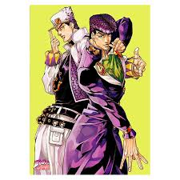
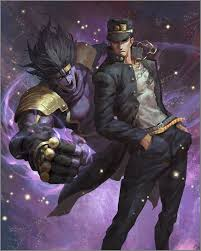

Інформація про нього
Джотаро Куджо (空条 承太郎 Kūjō Jōtarō?) - головний протагоніст третьої частини серії Неймовірні пригоди ДжоДжо, Хрестоносці зоряного пилу, і третій ДжоДжо в ній. Він також з'являється як головний союзник у Незламному алмазі та Кам'яному океані, а також ненадовго з'являється у Золотому вітрі. В результаті всіх своїх появ, Джотаро - ДжоДжо-протагоніст у серії, що найбільше повертається.
Де його згадували
- OVA «JoJo's Bizarre Adventure» (1993–1994 та 2000–2002)
- Аніме-серіал від David Production (2012 — дотепер)
- Фільм «JoJo's Bizarre Adventure: Diamond Is Unbreakable Chapter I» (2017)
- «Так казав Кішібе Рохан» (OVA)
Ще декілька фото його
 